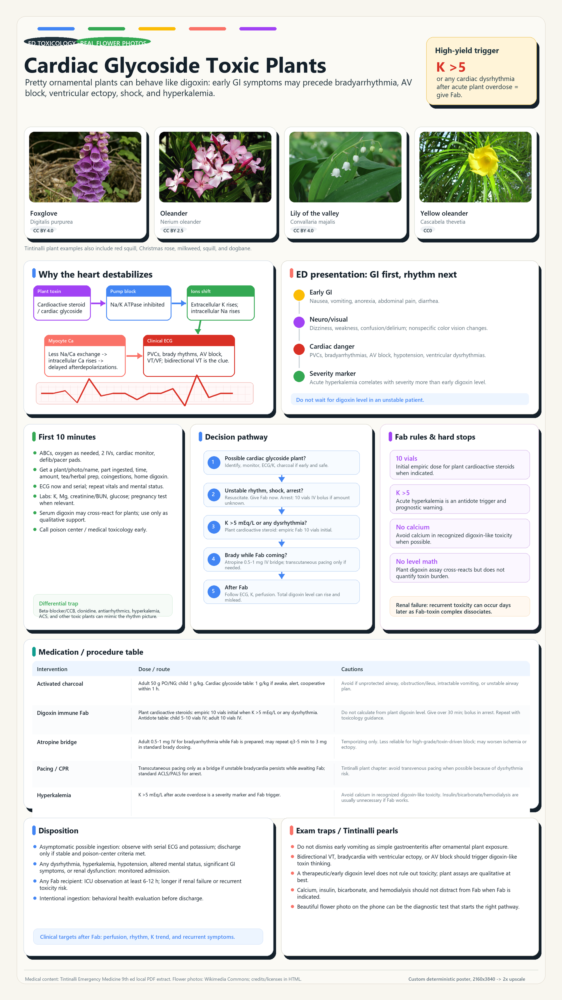

Tintinalli Ch.193, Ch.221, Ch.176 Custom deterministic poster with real flower photos

Primary local medical source: Tintinalli Emergency Medicine 9th ed local extract, mainly Chapter 193 Digitalis Glycosides, Chapter 221 Poisonous Plants, Chapter 176 General Toxicology, and atropine dose context from Chapters 19/109. Image workflow: no prompt-only AI text rendering was used for the medical poster. It was composed deterministically in Python/Pillow from source-backed text plus real flower photos, exported at 2160x3840 and upscaled 2x to 4320x7680. Flower photos:Foxglove (CC BY 4.0, Robert Flogaus-Faust); Oleander (CC BY 2.5, Alvesgaspar); Lily of the valley (CC BY 4.0, Robert Flogaus-Faust); Yellow oleander (CC0, David E Mead). Photo source manifest: assets/photo_sources.json.